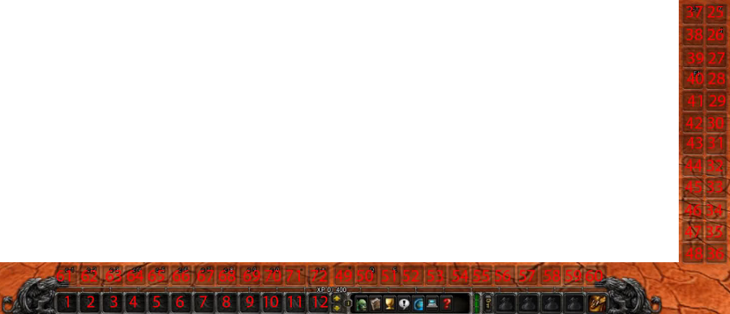

UI and Macros
Keep in mind, that WoW Classic (1.13) uses the modern WoW client API!
Most Vanilla (1.12) macros/addons relying on scripted targeting or spell casting will not work!
Addons
- Must have addons: equipment manager, enemy health in percent, some auction/mail addon
- Must have addons for PvE: threat meter, boss mods, Cthun warner
- Must have addons for PvP: enemy cast bar, spell warner
Macros
Start attack
You may want to macro this into the majority of your abilities, except a few like Charge and mouse-over Sunder Armor to not break CC. 1.13:
#showtooltip /startattack /cast Mortal Strike
1.12, you need to replace the number (72) with the location of auto attack on your bars:
/script if not IsCurrentAction(72) then UseAction(72) end; /cast Mortal Strike /cast Shield Slam /cast Bloodthirst
Stance conditionals
1.13, switches to Defensive Stance if you aren't in it and casts Disarm. Can be adapted to any other stance (1 Battle Stance, 2 Defensive Stance, 3 Berserker Stance) and skill:
#showtooltip Disarm /cast [nostance:2] Defensive Stance; Disarm
...or:
/cast [stance:1/3] Defensive Stance; Disarm
1.12:
/run _,_,a=GetShapeshiftFormInfo(2);if(a==1)then CastSpellByName("Sunder Armor");else CastShapeshiftForm(2) end;
1.12, if you don't want to switch stances automatically, but just cast a spell if you are in that stance:
/run _,_,a=GetShapeshiftFormInfo(2);if(a==1)then CastSpellByName("Disarm");end;
Charge/Intercept + Hamstring, 1.13:
#showtooltip /startattack /cast [stance:1] Charge; [stance:3] Intercept /cast Hamstring
1.12:
/cast Charge /cast Hamstring /cast Intercept
Mouse-over
You may to have this for Taunt, Overpower and Mocking Blow, too. 1.13:
/cast [@mouseover,harm,nodead,exists] Sunder Armor
Uses ability on mouse-over target if it exists, otherwise uses it on current target, 1.13:
/cast [@mouseover,harm,nodead,exists] Sunder Armor; Sunder Armor
Universal cast interrupt macro
Uses Shield Bash if a shield is equipped and you are in Battle/Defensive Stance, otherwise uses Pummel or switches to Berserker Stance
#showtooltip [stance:3] Pummel; Shield Bash /stopcasting /cast [nomounted,stance:1/2,equipped:Shields] Shield Bash; [nomounted,stance:1] Berserker Stance; [nomounted,stance:3] Pummel;
With mouse-over:
Ranged
One button ranged, 1.13:
/cast [worn:gun] Shoot Gun; [worn:crossbow] Shoot; [worn:bow] Shoot; Throw
1.12:
/cast Shoot Gun /cast Shoot Crossbow /cast Shoot Bow /cast Throw
Weapon swapping
Weapon equip macros (2H, DW, 1H+Shield, slot 16 is MH, slot 17 is OH), 1.13:
/stopcasting /equip Bonereaver's Edge
/stopcasting /equipslot 16 Tooth of Eranikus /equipslot 17 Serathil
/stopcasting /equipslot 16 Tooth of Eranikus /equipslot 17 Aegis of Stormwind
For 1.12 weapon swapping you want to use an AddOn like ItemRack, create and keybind sets there.
On-use items
1.13, use upper/lower trinket. This also works with other equipment slots and on-use items (1 head, 5 chest, 6 belt, 8 feet, 15 back, 17 offhand):
/use 13 /use 14
1.12:
/run UseInventoryItem(13); /run UseInventoryItem(14);
Miscellaneous
Mount macro, adapt the mount names to your mounts. Cancels Bloodrage and can be used to drop flag in WSG (Horde version, Alliance needs to replace "Alliance Flag" with "Horde Flag"). Uses AQ mount when in AQ40, 1.13:
/cancelaura Bloodrage /cancelaura Alliance Flag /use Red Qiraji Resonating Crystal /use Horn of the Black War Wolf
Reset instances:
/run ResetInstances();
Action bar slots
Textual form on wowpedia. Visualization:
(modified based on an image from Feenix forums, unknown author, Jan 2012 or older)
KEYBIND EVERYTHING!